▶ Matière première, seconde vie · retour de relecture
Retour page par page
Relecture de l’analyse stratégique (11 pages), des 3 axes créatifs, des 3 moodboards et de vos notes, dans l’ordre de votre trame Save the Cat. Pour chaque page : ce qui marche, ce qu’il faut changer, les corrections de texte, une proposition d’« À retenir » et une maquette.
Atelier Sarment (nom provisoire)29 septembre 2026Naming : relecture à venir
Vos textes sont bien écrits et bien documentés : je les ai très peu retouchés. Les vrais chantiers sont la structure, la hiérarchie visuelle et les pages manquantes. Par ordre d’importance :
Il manque la moitié du récit.
Le PDF couvre surtout le Set-up. Manquent : brief, problématique, « Pourquoi maintenant », concurrence, concept, plateforme de marque (cibles, personas, 4P). Presque tout est déjà écrit dans vos notes : il reste surtout à le mettre en page.
Remettre les pages dans l’ordre.
Légal et Éthique (p. 11) sont séparés du PESTELÉ par le Marché et le SWOT : les ramener après la p. 8. Déplacer le SWOT dans la plateforme de marque, comme prévu dans votre tableau. Déplacer le paragraphe Gironde de la p. 3 vers « Pourquoi maintenant ».
Réparer le texte coupé.
p. 11 : « …garantie à » → « …garantie à l’échelle du projet. » Puis les corrections listées plus bas (apostrophes, ponctuation, vocabulaire).
Un « À retenir » sur chaque page de contenu.
Même composant, même place, 25 mots maximum. Votre motif de sélection bleue s’y prête parfaitement : sélectionner, c’est retenir. Une proposition de phrase est donnée pour chaque page.
Six niveaux de texte au lieu de deux.
Aujourd’hui : un très grand titre et du texte courant. Ajoutez chapeau, intertitres, chiffres clés, légendes, sources et folios.
Rééquilibrer les densités.
p. 3 et 7 trop pleines ; p. 2, 8 et 11 trop vides ; p. 4, 6 et 10 déséquilibrées ; p. 5 sans aucun visuel. Chaque vide devient une info visuelle : chiffre, frise, schéma, À retenir.
Un seul vocabulaire.
« Luminaire » et non « mobilier » (votre objectif est le pied de lampe), « PESTELÉ » partout, une seule tranche d’âge pour la cible, un seul temps de séchage.
02
Chemin de fer Save the Cat
Chaque rectangle est une page du futur dossier, dans l’ordre de votre tableau. Ce chemin de fer répond à la question « est-ce qu’il manque des pages ? ».
Existe, à retravailler 16À créer, contenu prêt dans vos notes 14À créer, à rédiger ou à produire 18Étape suivante du projet 16
Sans compter la charte, les déclinaisons et la conclusion : 16 pages existent et sont à retravailler, 14 sont à créer avec un contenu déjà prêt dans vos notes, 18 sont à rédiger ou à produire. Le Set-up et la plateforme dépassent le nombre de pages prévu par votre tableau : gardez-les serrés.
03
Règles communes à tout le dossier
À régler une fois dans le gabarit, avant de reprendre les pages une par une.
Une grille, une place pour chaque chose
Les titres sont tantôt à gauche (p. 3), décalés (p. 5, 9) ou centrés (p. 7, 10). Fixez une grille (par exemple 12 colonnes, marges de 20 mm en A3 paysage) et une zone titre fixe : toujours à gauche, même ligne de base, sélection bleue sur le mot important.
Six niveaux de texte
Titre de section
Intertitre de page
Chapeau : deux ou trois lignes qui résument la page.
Le texte courant actuel est trop serré (approche négative) : les lettres se touchent. Remettez l’approche à 0.
Le composant « À retenir »
En bas de la colonne de texte, sur chaque page de contenu, 25 mots maximum. Il reprend votre motif de sélection :
▶ À retenir
Une ressource massive, encore traitée comme un déchet.
Le lecteur pressé lit les titres et les « À retenir » : ensemble, ils doivent raconter tout le dossier.
Des pages d’images
Prévoyez 3 ou 4 pages de respiration (photo pleine page) aux ouvertures de parties. La taille des vignes a lieu de novembre à mars : organisez une séance photo dans un domaine (mains, sécateur, fagots, lumière rasante). Vos propres photos valent plus que des images de banque.
Gardez le débord du cadre des p. 4 et 6 (les sarments sortent de l’image) comme signature, une fois par double page au maximum.
Folios et en-tête courant
Seule la p. 1 est numérotée. Mettez le numéro de page en bas à droite et le nom de la partie en haut à gauche, dans le style de « ▶ MATIÈRE PREMIÈRE, SECONDE VIE » de la couverture. Toutes les maquettes de ce retour les montrent.
Une source sous chaque chiffre
Une ligne de source en pied de page (F.G.V.B., Syndicat du luminaire…) et une page Sources en annexe. Un jury vérifie les chiffres, et les vôtres sont bons : montrez d’où ils viennent.
Typographie française
Aujourd’hui
À faire
l'épamprage (droite) et l’échelle (courbe)
apostrophe courbe ’ partout
"nobles"
« nobles »
Forces : · 93 %
espace fine insécable avant : ; ? ! et %
4 300 · 130 000
espace insécable dans les milliers
idées enchaînées sans puces (PESTEL)
une puce par idée
La couleur de sélection
Le bleu est une bonne signature pour le dossier, et il tranche avec les photos chaudes. Si c’est voulu, gardez-le partout. Sinon, remplacez-le par une couleur de la charte finale une fois l’axe choisi : le dossier deviendra une première démonstration de votre identité.
04
Page par page, dans le nouvel ordre
Les pages existantes (p. 01 à 11) sont remises à leur place dans la trame. Les pages marquées « Nouvelle » sont à créer. Chaque maquette est une grille de 12 colonnes au format A3 paysage ; le bloc bleu est l’« À retenir ».
0
Hors trame
Couverture & sommaire
Nouvelle
Couverture du dossier
À produire
Photo pleine page : sarment dans la lumière
Nom de marque
Matière première, seconde vie
Mise en page suggérée
Ce que la page doit contenir
Le nom de la marque (naming à venir) et un visuel fort : votre lampe, ou un sarment dans la lumière.
Sous-titre : « Matière première, seconde vie : création d’une marque produit ».
Vos noms, l’école, l’année.
p. 02
Sommaire
À refaire en fin de projetDensité : Trop vide
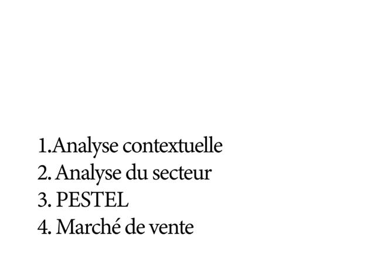
Actuel
02
Sommaire
01 → 05 + pages
06 → 09 + pages
Photo matière
Proposition de mise en page
Ce qui marche
Grande typo lisible, c’est une bonne base.
À faire
Il liste 4 parties alors que le dossier en comptera une dizaine. Le refaire à la fin, avec les numéros de pages.
Regrouper les 15 temps du Save the Cat en 9 chapitres (proposition ci-dessous) : le lecteur voit tout le récit d’un coup d’œil.
Ajouter le titre « Sommaire » et occuper la moitié haute : une photo, ou un sommaire sur deux colonnes.
05Concept & plateforme de marque positionnement, cibles, personas, SWOT, 4P
06Recherches graphiques moodboards, axes 1 à 3, axe final
07Charte graphique
08Déclinaisons
09Conclusion & sources
Corrections
Avant1.Analyse contextuelle
Après1. Analyse contextuelle (espace après le point)
Avant4. Marché de vente (p. 9 : « Marché de ventes »)
AprèsUn seul intitulé partout : « Marché de vente », ou plus précis : « Le marché du luminaire »
1
Opening Image
Brief / introduction
1 page
Manquant. Votre couverture « Analyse stratégique » ouvre une partie, elle ne présente pas le projet.
Nouvelle
Brief
À rédiger (court)Page image
03
Photo pleine page : vigne taillée en hiver
Brief
Demande · Projet · Attentes
Mise en page suggérée
ContenuL’en-tête de votre p. 1 et vos notes (objectifs).
Texte de la page, prêt à coller
Titre
Brief
La demande
Créer une marque produit à partir d’une matière première en seconde vie.
Le projet
Atelier Sarment (nom provisoire) transforme le sarment de vigne, coproduit brûlé ou broyé chaque hiver, en luminaires artisanaux. Le sarment est conservé entier et tracé jusqu’à son domaine d’origine, en Nouvelle-Aquitaine.
Les attentes
Une plateforme de marque, une identité visuelle (logo, charte graphique) et ses déclinaisons : étiquette de traçabilité, packaging, réseaux sociaux, site.
Mise en page
La demande : créer une marque produit à partir d’une matière première en seconde vie.
Le projet : Atelier Sarment (nom provisoire), des luminaires artisanaux en sarment de vigne entier, tracé jusqu’au domaine, en Nouvelle-Aquitaine.
Les attentes : plateforme de marque, identité visuelle (logo, charte), déclinaisons (étiquette de traçabilité, packaging, réseaux sociaux, site).
Une photo pleine page d’une vigne taillée en hiver, le texte en surimpression.
2
Theme Stated
Problématique
1 page
Manquante dans le PDF. Vous en avez 4 versions dans vos notes : analyse et recommandation dans la section Problématique.
Nouvelle
Problématique
Contenu prêt
04
Problématique
Comment le design peut-il transformer les irrégularités…
Matière · Geste · Lumière
Mise en page suggérée
ContenuVersion 4 de vos notes, légèrement ajustée (voir section Problématique).
Ce que la page doit contenir
La problématique seule, en grand, sur la page. Rien d’autre.
Sélection bleue sur les mots qui portent le projet : « irrégularités », « brûlé ou broyé », « luminaire ».
En petit dessous : les 3 mots-clés qui annoncent vos 3 axes (matière, geste, lumière).
3
Set-Up
État des lieux / étude de marché
4 à 5 pages
Vous êtes au-dessus de la cible : 9 pages. C’est acceptable, car c’est le socle du dossier, mais n’ajoutez rien de plus ici. La page « Usages actuels » remplace du texte déplacé vers le Catalyst.
p. 01
Intercalaire « Analyse stratégique »
À repositionnerDensité : Équilibrée
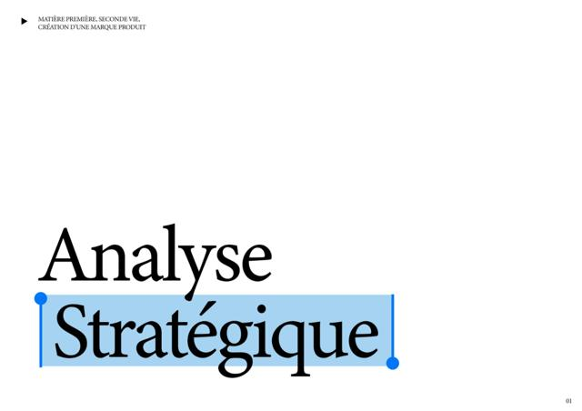
Actuel
▶ MATIÈRE PREMIÈRE, SECONDE VIE05
Photo pleine hauteur : sarments
02
Analyse stratégique
Contexte · Secteur · PESTELÉ · Marché
Proposition de mise en page
Ce qui marche
Typographie forte et motif de sélection bleue : une vraie signature, réutilisable partout.
L’en-tête « ▶ Matière première, seconde vie… » est élégant : c’est le modèle de l’en-tête courant pour toutes les pages.
À faire
C’est un intercalaire de partie, pas la couverture du dossier. Le placer après le brief et la problématique.
Ajouter une image sur la moitié droite (photo pleine hauteur de sarments) : l’intercalaire devient une page de respiration.
Afficher le numéro de partie (« 02 ») et, en petit, son contenu : Contexte · Secteur · PESTELÉ · Marché.
p. 03
Analyse contextuelle
À allégerDensité : Trop pleine
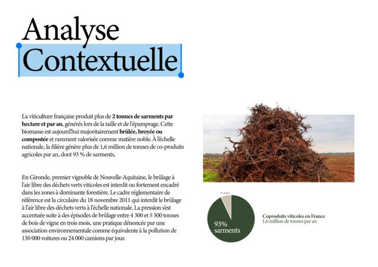
Actuel
▶ ANALYSE STRATÉGIQUE06
Analyse contextuelle
§ 1 : la ressource
2 t · 1,6 Mt · 93 %
À retenir
Photo : tas de sarments
Camembert 93 %
Proposition de mise en page
Ce qui marche
Bon duo photo + camembert, et le gras sur les chiffres clés guide la lecture.
À faire
Déplacer le 2e paragraphe (Gironde, circulaire de 2011, 130 000 voitures) vers « Pourquoi maintenant ? » : c’est exactement votre déclencheur. La page respire.
Sortir 3 chiffres clés en très grand : 2 t/ha/an, 1,6 Mt de coproduits, 93 % de sarments (le camembert porte déjà le 93 %).
Ajouter la source en pied de page (F.G.V.B.).
Vérifier la portée de la circulaire du 18 novembre 2011 : elle vise les déchets verts, et le brûlage agricole relève souvent d’arrêtés préfectoraux avec dérogations (ce que vous dites vous-mêmes en Légal). Formulez les deux passages de façon cohérente, un jury peut relever l’écart.
Corrections
Avantl'épamprage · aujourd'hui (droites) / l’échelle (courbe)
Une ressource massive (2 t/ha/an, 93 % des coproduits viticoles) encore traitée comme un déchet.
p. 04
La ressource
À compléterDensité : Déséquilibrée
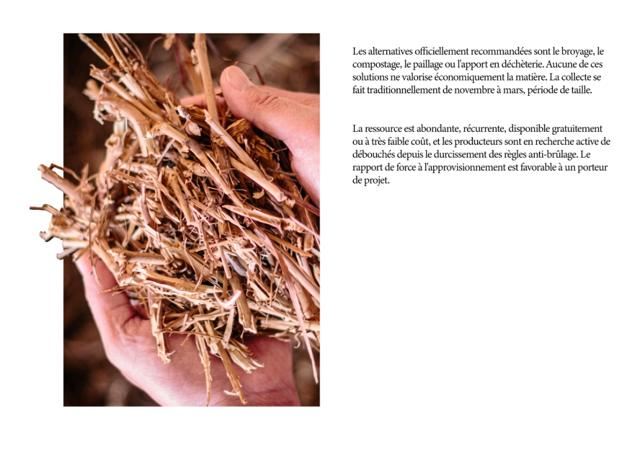
Actuel
▶ ANALYSE STRATÉGIQUE07
Photo pleine hauteur (débord)
Intertitre
2 paragraphes
Frise : nov. → mars · séchage
À retenir
Proposition de mise en page
Ce qui marche
La photo pleine hauteur, avec les brins qui débordent du cadre : très bonne idée, à garder comme signature.
À faire
La photo montre des brins broyés, c’est-à-dire l’usage actuel que vous voulez dépasser. Légendez-la (« Sarment broyé : l’usage d’aujourd’hui ») ou remplacez-la par des sarments entiers.
Ajouter un intertitre : « Une ressource disponible, gratuite et en quête de débouchés ».
Remplir le quart vide en bas à droite avec une frise de saisonnalité (exemple ci-dessous).
NovDécJanFévMarAvrMaiJuinJuilAoûtSepOct
Taille & collecteSéchage (3 à 6 mois)Façonnage
Exemple de frise pour le quart vide (données de vos notes ; le séchage « 3 à 6 mois » et « 6 mois minimum » se contredisent : choisissez).
Corrections
Avantl'apport en déchèterie · l'approvisionnement
Aprèsl’apport en déchèterie · l’approvisionnement (apostrophes courbes)
▶ À retenir (proposé)
Abondante, récurrente et gratuite : la matière est là, et les vignerons cherchent à s’en défaire proprement.
Nouvelle
Usages actuels du sarment (segmentation)
Contenu prêtAprès la p. 4
▶ ANALYSE STRATÉGIQUE08
Usages actuels
Retour au sol
Brûlage
Énergie & compost
Matériaux
Légende + jauge
Légende + jauge
Légende + jauge
Légende + jauge
À retenir
Mise en page suggérée
ContenuVos notes, « Usages actuels (les segments) ». Votre tableau demande une segmentation dans le Set-up : elle manque dans le PDF.
Texte de la page, prêt à coller
Titre
Usages actuels du sarment
Chapeau
Avec environ deux tonnes par hectare et par an, la ressource est massive et récurrente. Elle part aujourd’hui dans quatre directions.
Retour au sol
C’est l’usage majoritaire : le sarment est broyé et laissé dans les rangs. Certains experts jugent ces 2 tonnes restituées comme un minimum pour entretenir la vie du sol.
Brûlage
Encore souvent pratiqué à l’air libre, il génère une fumée polluante. La réglementation se durcit dans les régions où il était traditionnel.
Énergie et compost
Transformation en pellets, en biogaz ou en compost.
Matériaux
Vitis Valorem en est le pionnier : l’entreprise collecte en moyenne 300 hectares de sarments et de ceps par an, de novembre à mars, pour fabriquer des tuteurs, des piquets et des agrafes. Elle prévoit de s’étendre à la cosmétique, à l’automobile et au bâtiment.
Source
Toutlevin.com, « La surprenante seconde vie de la vigne et du raisin ».
À retenir
Aucun usage actuel ne conserve le sarment dans sa forme d’origine : il est broyé, brûlé ou composté.
Mise en page
4 colonnes, une par usage, chacune avec une photo et une jauge (majoritaire → niche).
Garder la nuance de vos notes sur le retour au sol : certains experts jugent ces 2 t/ha un minimum pour la vie du sol. Précisez que le projet ne prélève qu’une petite part des sarments. Un jury vous posera la question.
Retour au sol
Broyage-épandage dans les rangs. Majoritaire.
Brûlage
À l’air libre, polluant. En recul.
Énergie & compost
Pellets, biogaz, compost.
Matériaux
Vitis Valorem, Les Princes Sarments. Niche.
Jauges qualitatives : vos notes ne donnent pas de pourcentages par usage. N’inventez pas de chiffres ; si vous en trouvez, sourcez-les.
p. 05
Analyse du secteur
À illustrerDensité : Texte seul
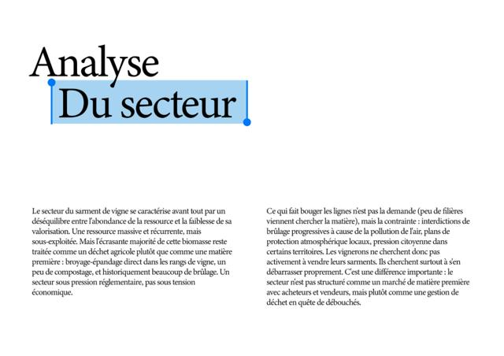
Actuel
▶ ANALYSE STRATÉGIQUE09
Analyse du secteur
« Un secteur sous pression réglementaire… »
Balance : massive / peu valorisée
§ 1
§ 2
À retenir
Proposition de mise en page
Ce qui marche
Le texte est clair et il contient la meilleure phrase de l’analyse : « Un secteur sous pression réglementaire, pas sous tension économique. »
À faire
Aucune image ni visuel, et un grand vide entre le titre et le texte : le titre flotte.
Faire de cette phrase une citation en grand, à droite du titre.
Ajouter un petit schéma : une balance « ressource massive / valorisation faible ».
Corrections
AvantUne ressource massive et récurrente, mais sous-exploitée. Mais l'écrasante majorité de cette biomasse…
Après…une ressource massive et récurrente, mais sous-exploitée : l’écrasante majorité de cette biomasse… (deux « mais » d’affilée)
Avant…un peu de compostage, et historiquement beaucoup de brûlage.
Après…un peu de compostage et, historiquement, beaucoup de brûlage.
▶ À retenir (proposé)
Pas de marché organisé : le sarment est géré comme un déchet en quête de débouchés.
p. 06
Le secteur, à petite et à grande échelle
À compléterDensité : Déséquilibrée
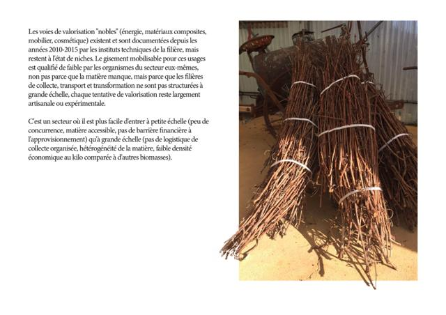
Actuel
▶ ANALYSE STRATÉGIQUE10
Voies « nobles » + échelle
Petite échelle ✓
Grande échelle ✗
À retenir
Photo : fagots (débord)
Proposition de mise en page
Ce qui marche
Photo forte (fagots liés) et débord du cadre, cohérent avec la p. 4.
À faire
Le bas gauche est vide. Y placer un comparatif en deux colonnes, tiré de votre 2e paragraphe :
Petite échelle ✓ peu de concurrence, matière accessible, pas de barrière financière. Grande échelle ✗ pas de logistique de collecte, matière hétérogène, faible valeur au kilo.
Corrections
AvantLes voies de valorisation "nobles"
AprèsLes voies de valorisation « nobles »
Avant…ne sont pas structurées à grande échelle, chaque tentative de valorisation reste…
Après…ne sont pas structurées à grande échelle : chaque tentative de valorisation reste…
▶ À retenir (proposé)
Facile d’entrer à petite échelle, difficile d’industrialiser : le modèle artisanal est le bon point de départ.
p. 07
PESTELÉ 1/2
À restructurerDensité : Trop pleine
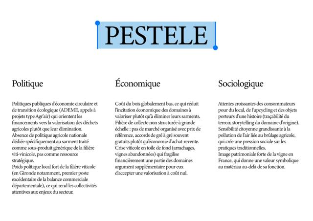
Actuel
▶ ANALYSE STRATÉGIQUE11
PESTELÉ 1/2
Politique
Économique
Socioculturel
Technologique
Légende : Atout · Frein · Vigilance
Proposition de mise en page
Ce qui marche
Contenu solide et précis. L’ajout de l’Éthique est rare et apprécié.
À faire
Un seul nom partout : « PESTELE » ici, « PESTEL » au sommaire, « PESTELÉ » dans vos notes.
Titre centré alors que les autres sont à gauche : l’aligner à gauche.
Chaque facteur est un bloc de 3 idées sans puces. Passer en 3 puces avec un mot-clé en gras et une étiquette Atout / Frein / Vigilance : la lecture devient immédiate.
Répartir le PESTELÉ sur 2 pages équilibrées : P · É · S · T puis É · L · É. Aujourd’hui il est sur 3 pages (3 + 2 + 2 blocs), dont une isolée après le SWOT.
Exemple (Politique) : un mot-clé, une ligne, une étiquette
AtoutFinancements publics ADEME, appels à projets type Agr’air.
FreinPas de politique dédiée Le sarment reste un sous-produit générique.
AtoutPoids local de la filière Collectivités attentives au secteur.
Version complète des 7 facteurs, étiquetée et corrigée : section « Textes corrigés ».
Corrections
AvantAbsence de politique agricole nationale dédiée spécifiquement au sarment traité comme sous-produit générique de la filière viti-vinicole
AprèsAucune politique agricole nationale n’est dédiée au sarment : il est traité comme un sous-produit générique de la filière vitivinicole
Avant…qui fragilise financièrement une partie des domaines argument supplémentaire pour eux…
Après…qui fragilise financièrement une partie des domaines : un argument supplémentaire pour eux…
AvantSociologique
AprèsSocioculturel (terme habituel du PESTEL, facultatif)
p. 08 + p. 11
PESTELÉ 2/2 (fusion des p. 8 et 11)
À fusionnerTexte coupé p. 11Densité : Trop vide
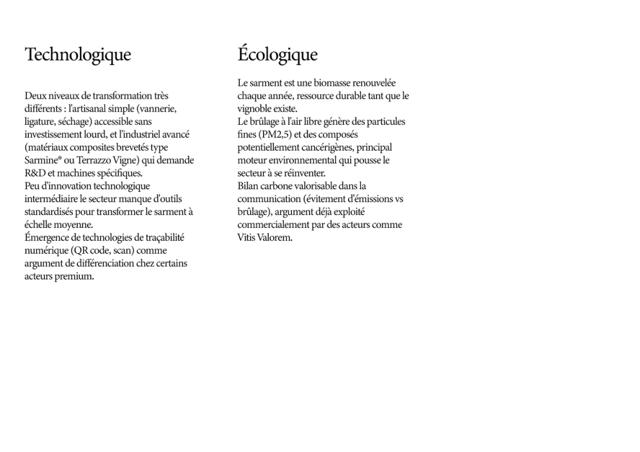
Actuel p. 8
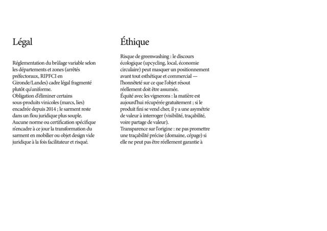
Actuel p. 11
▶ ANALYSE STRATÉGIQUE12
PESTELÉ 2/2
Écologique
Légal
Éthique
Photo
À retenir du PESTELÉ
Proposition de mise en page
À faire
La p. 11 (Légal, Éthique) est rangée après le Marché et le SWOT : la ramener ici. Les deux pages sont à moitié vides, fusionnées elles tiennent sur une.
Le texte Éthique est coupé : « …si elle ne peut pas être réellement garantie à » (il manque la fin).
Terminer par le « À retenir » de tout le PESTELÉ.
L’Éthique est un point fort de votre dossier : vous y répondrez dans la plateforme de marque (valeur « équité envers les vignerons »).
Corrections
Avant…si elle ne peut pas être réellement garantie à
Après…si elle ne peut pas être réellement garantie à l’échelle du projet.
AvantPeu d'innovation technologique intermédiaire le secteur manque d'outils…
AprèsPeu d’innovation technologique intermédiaire : le secteur manque d’outils…
Avant(arrêtés préfectoraux, RIPFCI en Gironde/Landes) cadre légal fragmenté
Après(arrêtés préfectoraux, RIPFCI en Gironde et dans les Landes) : un cadre légal fragmenté. Écrire RIPFCI en toutes lettres une fois (règlement interdépartemental de protection de la forêt contre l’incendie, à vérifier).
Avant…en mobilier ou objet design vide juridique à la fois…
Après…en mobilier ou en objet design : un vide juridique à la fois…
Avant(évitement d'émissions vs brûlage)
Après(émissions évitées par rapport au brûlage)
▶ À retenir (proposé)
Un contexte porteur (réglementation, envie de sens, image de la vigne), à condition de rester honnête : pas de greenwashing, équité avec les vignerons, traçabilité réelle.
p. 09
Marché de vente
À clarifierDensité : Équilibrée
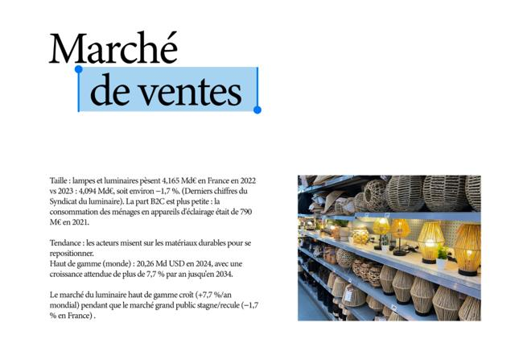
Actuel
▶ ANALYSE STRATÉGIQUE13
Marché de vente
4,1 Md€ · 790 M€ · 20,26 Md$
−1,7 % ↘ vs ↗ +7,7 %/an
Sources et années
À retenir
Photo + légende « contre-modèle »
Proposition de mise en page
Ce qui marche
Bonne mise en page texte + photo, chiffres sourcés.
À faire
Le dernier paragraphe répète les chiffres du précédent : en faire le « À retenir ».
Mettre les chiffres en visuel : deux flèches, « Grand public France −1,7 % » et « Haut de gamme monde +7,7 %/an ».
Légender la photo : c’est un rayon de grande distribution en fibres « naturelles » industrielles, votre contre-modèle. Dites-le : « Le naturel standardisé ».
Les chiffres mélangent 2021, 2022, 2023 et 2024, et la France et le monde : indiquer année et périmètre à chaque chiffre.
Corrections
AvantMarché de ventes
AprèsMarché de vente (comme au sommaire)
AvantTaille : lampes et luminaires pèsent 4,165 Md€ en France en 2022 vs 2023 : 4,094 Md€, soit environ −1,7 %. (Derniers chiffres du Syndicat du luminaire).
AprèsTaille : les lampes et luminaires pesaient 4,165 Md€ en France en 2022, contre 4,094 Md€ en 2023, soit environ −1,7 % (derniers chiffres du Syndicat du luminaire).
Avant20,26 Md USD
Après20,26 Md$
Avantstagne/recule (−1,7 % en France) .
Aprèsstagne, voire recule (−1,7 % en France).
▶ À retenir (proposé)
Le haut de gamme progresse (+7,7 %/an) pendant que le grand public recule (−1,7 %) : la place est du côté du luminaire durable et premium.
4
Catalyst
Pourquoi maintenant ?
2 pages
Manquant dans le PDF. Le texte des deux pages est rédigé ci-dessous, prêt à coller : il reprend le 2e paragraphe de la p. 3 et vos notes sur les matériaux du luminaire.
Nouvelle
Le brûlage n’est plus une option
Contenu prêt
▶ POURQUOI MAINTENANT14
Pourquoi maintenant ?
130 000 voitures / jour
Réglementation + pression citoyenne
À retenir
Photo : fumée de brûlage
Mise en page suggérée
Contenu2e paragraphe de la p. 3 (déplacé), complété par les alternatives de la p. 4.
Texte de la page, prêt à coller
Sur-titre
Pourquoi maintenant ?
Titre
Le brûlage n’est plus une option
Chiffre clé
130 000 voitures par jour
Légende du chiffre
C’est la pollution équivalente aux 4 300 à 5 500 tonnes de bois de vigne brûlées en trois mois en Gironde, selon une association environnementale.
Texte
En Gironde, premier vignoble de Nouvelle-Aquitaine, le brûlage à l’air libre des déchets verts viticoles est interdit ou fortement encadré dans les zones à dominante forestière. Le cadre réglementaire de référence est la circulaire du 18 novembre 2011, qui interdit le brûlage à l’air libre des déchets verts à l’échelle nationale.
La pression s’est accentuée à la suite d’épisodes de brûlage de 4 300 à 5 500 tonnes de bois de vigne en trois mois, une pratique dénoncée par une association environnementale comme équivalente à la pollution de 130 000 voitures ou 24 000 camions par jour.
Les alternatives recommandées (broyage, compostage, paillage, déchèterie) ne valorisent pas économiquement la matière. Les vignerons cherchent donc surtout à se débarrasser proprement de leurs sarments.
Source
Circulaire du 18 novembre 2011 ; [nom de l’association environnementale] ; F.G.V.B.
À retenir
Brûler n’est plus possible, broyer ne rapporte rien : les vignerons ont besoin d’un débouché.
Remplacez [nom de l’association] par la source exacte. Le 3e paragraphe reprend la p. 4 : supprimez-le de la p. 4 si vous le gardez ici.
Mise en page
Un chiffre choc en très grand : 130 000 voitures par jour (4 300 à 5 500 t de bois de vigne brûlées en trois mois).
Le cadre : circulaire du 18 novembre 2011, zones forestières de Gironde, pression citoyenne.
Nommer l’association qui a fait le calcul (source en pied de page).
Une photo de fumée de brûlage dans les vignes.
Nouvelle
Le luminaire cherche d’autres matières
Contenu prêt
▶ POURQUOI MAINTENANT15
Le luminaire aujourd’hui
Métal
Plastique
Verre, céramique
Fibres
Recycler le sarment : 5 pictos
À retenir
Mise en page suggérée
ContenuVos notes : « Le problème des matériaux du mobilier actuel » et « Les recycler, c’est ».
Texte de la page, prêt à coller
Sur-titre
Pourquoi maintenant ?
Titre
Le luminaire cherche d’autres matières
Chapeau
Le luminaire d’aujourd’hui repose surtout sur des matériaux énergivores ou d’origine fossile.
Métal
Acier, aluminium, laiton : très courants pour les pieds et les structures. L’aluminium neuf est particulièrement énergivore à produire.
Plastiques
ABS, polycarbonate, polypropylène : dominants dans l’entrée de gamme, d’origine fossile et peu recyclés.
Verre et céramique
Cuits à haute température, donc énergivores.
Fibres naturelles
Bois, rotin, osier, papier, tissu : surtout pour les abat-jour et les modèles « naturels ».
Encadré
Recycler le sarment, c’est :
du temps gagné pour les vignerons ;
un engagement fort pour l’environnement ;
moins de CO₂ ;
pas de fumée toxique ;
moins de risques d’incendie.
Phrase de lien
Et la demande suit : le luminaire haut de gamme progresse de plus de 7,7 % par an dans le monde, et les fabricants misent sur les matériaux durables pour se repositionner.
Source
Vos notes ; chiffres du marché : voir p. 9 (Syndicat du luminaire, étude de marché haut de gamme).
À retenir
La contrainte crée le besoin (le brûlage recule), la tendance crée la demande (matériaux durables) : c’est le bon moment.
« Recycler » est le mot de vos notes ; « valoriser » serait plus juste, puisque le sarment n’est pas transformé en nouvelle matière.
Mise en page
4 familles de matériaux, chacune avec une photo et une ligne : métal (l’aluminium neuf est très énergivore), plastiques (fossiles, peu recyclés), verre et céramique (cuisson à haute température), bois, rotin, osier, papier, tissu (surtout pour les abat-jour).
Puis « Recycler le sarment, c’est » en 5 pictogrammes : du temps gagné pour les vignerons, un engagement pour l’environnement, moins de CO₂, pas de fumée toxique, moins de risques d’incendie.
5
Debate
Analyse de la concurrence
8 à 10 pages
Entièrement manquante dans le PDF. 3 concurrents sont rédigés dans vos notes, il en faut 6, plus la synthèse des outils de communication.
Nouvelles
Typologie + 6 fiches concurrents
3 prêtes3 à chercher
▶ CONCURRENCE17
Nom + logo
3 photos produits
Positionnement · cible · prix · canaux
Force
Faiblesse
Identité : palette · typo · ton
Ce qu’on en retient
Mise en page suggérée
ContenuVos notes : Niko & Co, Les Princes Sarments, Vitis Valorem (positionnement, force, faiblesse déjà rédigés).
Ce que la page doit contenir
1 page d’intro : trois familles, directs (même matière, même usage), indirects (même matière, autre usage), substituts (autre matière, même besoin, même cible).
1 page par concurrent, toujours le même gabarit : logo et 3 photos produits ; positionnement, cible, prix, canaux ; force et faiblesse ; identité visuelle (palette, typo, ton) ; « Ce qu’on en retient » en À retenir.
Type
Acteur
Pourquoi il compte
État
Direct
Niko & Co (Charente)
Mobilier design en piquets de vigne, pièce unique. Le comparable le plus proche.
Rédigé
Indirect
Les Princes Sarments (Provence)
Même matière, broyée en composite de luxe (B2B). Référence de storytelling.
Rédigé
Indirect
Vitis Valorem
Filière nationale de collecte, matière Sarmine®. Prouve que la collecte à grande échelle est possible.
Rédigé
Substitut premium
Luminaires en fibres naturelles d’éditeur (ex. Market Set)
Donne le niveau de prix et de finition attendu par Camille.
À chercher
Substitut grand public
« Naturel » de grande distribution (ex. Maisons du Monde, IKEA)
Votre photo p. 9 : le naturel standardisé, votre contre-modèle.
À chercher
Substitut artisanal
Lampes en bois flotté ou bois brut (Etsy, marchés de créateurs)
Même promesse (pièce unique, bois brut), même cliente, mais sans origine tracée.
À chercher
Les trois dernières lignes sont des pistes, pas des fiches : vérifiez chaque acteur (site, prix, canaux) avant de l’intégrer. Autre piste sur la cible œnophile : les objets en bois de barrique vendus en boutique de château.
Corrections
AvantPositionnement :Luxe
AprèsPositionnement : luxe
Avant…la logistique de collecte à grande échelle est possible..
Après…est possible.
Avant(Niko & Co) … d'autres bois de la vigne
Aprèsd’autres bois du vignoble : leurs piquets sont en acacia, pin ou châtaignier, ce n’est pas du bois de vigne
Nouvelles
Outils de communication + croix de positionnement
À produire
▶ CONCURRENCE24
Croix de positionnement
Positionnement
Lecture des axes
À retenir
Mise en page suggérée
Ce que la page doit contenir
Un tableau comparatif : 6 acteurs × 8 critères (site ou e-shop, Instagram, ton, palette, typographie, packaging, traçabilité affichée, prix).
Une page tendances : ce que tous font, ce que personne ne fait.
La croix de positionnement : votre tableau la place dans le Set-up, mais elle ne se lit qu’une fois les concurrents présentés. Mettez-la ici, en fin de concurrence.
Proposition d’axes et de placements, à ajuster avec vos fiches. Le quart teinté est l’espace libre.
▶ À retenir (proposé)
Seul acteur à relier un sarment conservé entier à son domaine d’origine, en production artisanale.
Nouvelle
Synthèse de l’analyse
Contenu prêt
▶ CONCURRENCE26
Synthèse
3 paragraphes (notes)
À retenir
Photo de respiration
Mise en page suggérée
ContenuVos notes, « Synthèse de l’analyse ». Elle clôt la partie analyse avant le concept.
Texte de la page, prêt à coller
Titre
Synthèse de l’analyse
Texte
La viticulture française génère plus de 2 tonnes de sarments par hectare et par an, une biomasse aujourd’hui très peu valorisée (broyage-épandage majoritaire, brûlage en recul sous la pression réglementaire). En Gironde, l’encadrement croissant du brûlage pousse les domaines à chercher activement des débouchés, ce qui rend la matière première accessible gratuitement ou à faible coût.
Le secteur reste peu structuré : ce n’est pas un marché organisé avec acheteurs et vendeurs, mais une gestion de déchet agricole en quête de valorisation. Trois types d’acteurs comparables existent : Niko & Co (Charente), artisanal, sur piquets de vigne et plusieurs essences de bois ; Les Princes Sarments, matériau composite haut de gamme pour l’architecture de luxe ; Vitis Valorem, filière B2B nationale multisecteur. Aucun n’occupe le segment précis du luminaire en sarment brut avec traçabilité du domaine d’origine en Nouvelle-Aquitaine : c’est l’espace de différenciation identifié pour ce projet.
L’analyse PESTELÉ confirme un contexte favorable : une dynamique réglementaire et institutionnelle favorable à l’économie circulaire, une sensibilité sociétale à l’upcycling et à la pollution du brûlage. Elle signale aussi des points de vigilance éthiques : risque de greenwashing, équité de valeur avec les vignerons fournisseurs, transparence sur la traçabilité annoncée.
À retenir
Aucun acteur n’occupe le luminaire en sarment brut, tracé jusqu’au domaine, en Nouvelle-Aquitaine.
Quand vos 6 fiches concurrents seront faites, remplacez « Trois types d’acteurs » par « Six acteurs » et ajoutez les trois nouveaux.
Mise en page
Les trois paragraphes de vos notes, et une photo de respiration.
Remplacer « mobilier » par « luminaire », comme partout.
Corrections
Avant…avec traçabilité du domaine d'origine en Nouvelle-Aquitaine c'est l'espace de différenciation…
Après…avec traçabilité du domaine d’origine en Nouvelle-Aquitaine : c’est l’espace de différenciation…
6
Break into Two
Concept / angle stratégique
2 pages
Manquant. C’est pourtant votre idée la plus forte, et elle est déjà écrite : « On ne dénature pas le sarment ».
Nouvelle
Le sarment reste sarment
Contenu prêtPage image
▶ CONCEPT27
Sarment broyé (brisures)
Sarment entier, cintré
Le sarment reste sarment
Mise en page suggérée
ContenuVos notes, « Pourquoi on est différent ? » (corrigé dans la section Textes corrigés).
Texte de la page, prêt à coller
Titre
Le sarment reste sarment
Texte
On ne dénature pas le sarment. Là où les autres entreprises le broient pour l’utiliser en brisures, nous le conservons dans sa structure naturelle, en y ajoutant des courbes organiques pour le sublimer. Nous mettons en valeur ce qui est habituellement broyé ou brûlé.
Légende photo gauche
Ce que font les autres : le sarment broyé, réduit en brisures.
Légende photo droite
Ce que nous faisons : le sarment entier, cintré, reconnaissable.
À retenir
Là où les autres broient le sarment, nous le gardons entier.
Mise en page
Un diptyque photo : à gauche le sarment broyé (ce que font les autres), à droite le sarment entier et cintré (ce que vous faites).
Une phrase en surimpression, et votre paragraphe en petit.
Nouvelle
De la vigne à la lampe (process)
Contenu prêt
▶ CONCEPT28
De la vigne à la lampe
1
2
3
4
5
Une ligne par étape
Partenaire vannier
À retenir
Mise en page suggérée
ContenuVos notes : les étapes de fabrication, le partenariat vannier ou sculpteur, et Niko & Co comme preuve que c’est faisable.
Texte de la page, prêt à coller
Titre
De la vigne à la lampe
1. Récolter
Choisir des sarments encore souples (récolte hivernale, juste après la taille) et épais, pour la structure.
2. Nettoyer et traiter
Brosser pour enlever la terre et l’écorce abîmée. Faire tremper ou passer à l’autoclave (traitement anti-insectes) pour que le bois dure en intérieur. Un léger ponçage des nœuds évite les échardes sur les zones de préhension.
3. Cintrer et sécher
Pour les formes courbes, cintrer les sarments encore verts autour d’un gabarit et laisser sécher plusieurs semaines : le bois garde la forme. Pour un usage droit, un séchage à l’air libre de 3 à 6 mois suffit.
4. Façonner le pied
[À compléter : assemblage, fixation de la douille, passage du câble, socle, abat-jour.]
5. Tracer
Chaque pied reçoit une étiquette : domaine, cépage, saison de taille.
Encadré partenaire
Un partenariat avec un vannier ou un sculpteur sur bois apporte la technique d’exécution et montre une vraie réflexion sur le mode de production.
Preuve de faisabilité
Niko & Co, jeune entreprise charentaise, transforme déjà des piquets de vigne en mobilier design vendu aux particuliers et aux professionnels.
À retenir
Un procédé simple et sans broyage : récolter, nettoyer, cintrer, sécher, assembler.
L’étape 5 est un ajout, cohérent avec votre valeur « traçabilité ». L’étape 4 reste à écrire.
Mise en page
5 étapes photographiées (idéalement vos propres photos), une ligne chacune.
L’étape « Choisir la typologie d’objet » est une décision de design, pas une étape de fabrication : puisque vous avez choisi le pied de lampe, remplacez-la par « Façonner le pied ».
L’étape « Assembler la structure » est vide dans vos notes : à compléter.
Un encadré « Partenaire » : le vannier ou sculpteur qui crédibilise la production.
RécolterSarments souples et épais, en hiver, juste après la taille.
Nettoyer & traiterBrossage, trempage ou autoclave anti-insectes, ponçage léger des nœuds.
Cintrer & sécherCintrage sur gabarit quand le bois est vert, puis séchage.
AssemblerÀ compléter : douille, passage du câble, socle, abat-jour.
TracerÉtiquette : domaine, cépage, saison de taille.
Corrections
AvantUn léger ponçage des nœuds éviter les échardes
AprèsUn léger ponçage des nœuds évite les échardes
Avantséchage à l'air libre 3-6 mois suffit / ailleurs : 6 mois de séchage minimum
AprèsUn seul chiffre partout (3 à 6 mois, ou 6 mois minimum)
7
B Story
Plateforme de marque
4 à 5 pages
Manquante, sauf le SWOT (p. 10) qui doit venir ici. Positionnement, valeurs, objectifs, cibles et deux personas sont dans vos notes.
Nouvelle
Mission, vision, valeurs
Valeurs prêtesMission à valider
▶ PLATEFORME DE MARQUE29
Mission & valeurs
Mission (une phrase)
Authenticité
Traçabilité
Ancrage
Équité
À retenir
Mise en page suggérée
ContenuVos notes : valeurs et objectifs. La mission et la vision sont des propositions.
Ce que la page doit contenir
Les 4 valeurs en 4 blocs égaux, une phrase chacune (déjà rédigée dans vos notes).
Objectifs : court terme, le pied de lampe ; long terme, le petit mobilier et les accessoires.
Mission (proposition)Donner une seconde vie au sarment de vigne en le transformant, sans le broyer ni le brûler, en luminaires artisanaux qui racontent le domaine d’où ils viennent.
Vision (proposition)Faire du sarment une matière reconnue du design d’intérieur.
Valeurs (vos notes)Authenticité de la matière · Traçabilité · Ancrage territorial · Équité envers les vignerons
▶ À retenir (proposé)
Une seule matière, un seul objet pour commencer : le pied de lampe en sarment.
Nouvelles
Positionnement, cibles, personas
Contenu prêt, à harmoniser
▶ PLATEFORME DE MARQUE31
Portrait
Nom, âge, métier
Citation
Motivations · freins
Canaux · budget · parcours
Ce qu’Atelier Sarment lui apporte
Mise en page suggérée
ContenuVos notes. Tout est détaillé plus bas : sections Cible et Personas.
Ce que la page doit contenir
1 page positionnement + cibles (schéma en cercles).
1 page personas B2C (Camille, Laurent), 1 page persona B2B (Sophie).
Vos notes donnent trois tranches d’âge différentes pour la cible (30-55, 25-45, 25-45) : à harmoniser.
▶ À retenir (proposé)
Cœur de cible : les 25-45 ans qui achètent une histoire plus qu’une lampe.
p. 10
SWOT
À déplacerÀ réordonnerDensité : Déséquilibrée
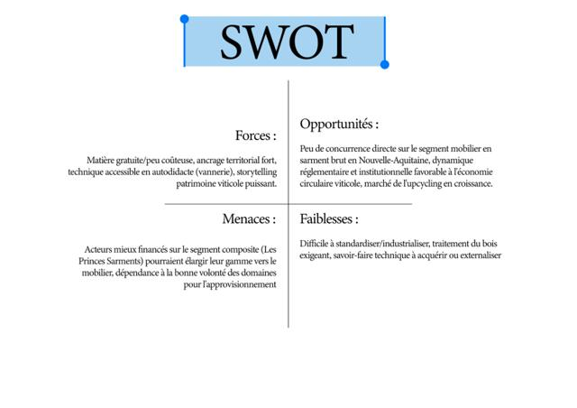
Actuel
▶ PLATEFORME DE MARQUE33
SWOT
Forces
Faiblesses
Opportunités
Menaces
À retenir
Proposition de mise en page
À faire
Le déplacer dans la plateforme de marque, comme prévu dans votre tableau : ce SWOT parle de votre projet, pas du secteur.
Ordre des cases : la convention est Forces | Faiblesses en haut (interne), Opportunités | Menaces en bas (externe). Ici Opportunités et Faiblesses sont inversées, ce qui perturbe la lecture.
Passer chaque case en 3 ou 4 puces courtes. La case Faiblesses ne fait que 2 lignes : la compléter pour équilibrer (propositions dans la section Textes corrigés).
Couleur : Forces et Opportunités d’une teinte, Faiblesses et Menaces d’une autre.
Corrections
AvantPeu de concurrence directe sur le segment mobilier en sarment brut
Après…sur le segment luminaire en sarment brut
▶ À retenir (proposé)
Une matière gratuite et un récit fort ; les défis sont la technique et l’approvisionnement.
Nouvelle
Mix marketing (4P)
À rédiger
▶ PLATEFORME DE MARQUE34
Mix marketing (4P)
Produit
Prix
Distribution
Communication
À retenir
Mise en page suggérée
ContenuDemandé par votre tableau, absent des notes.
Produit
Lampe à poser, pied en sarment entier cintré, abat-jour en lin ou papier. Pièces numérotées avec étiquette de traçabilité. Gamme de lancement courte : 2 ou 3 modèles.
Prix
120 à 250 € (Camille se méfie sous 80 €, hésite au-delà de 250 €). Pièce signature au-delà de 300 €. B2B sur devis.
Distribution
Boutique en ligne, concept-stores bordelais, boutiques des domaines partenaires, marchés de créateurs, salons.
Communication
Instagram (du rang de vigne à la lampe), QR code de traçabilité, portes ouvertes pendant la taille, presse déco, co-branding avec les domaines.
Proposition cohérente avec vos notes (budget de Camille, objectif pied de lampe). À valider en groupe.
▶ À retenir (proposé)
Une lampe unique à 120-250 €, vendue là où Camille et Sophie achètent déjà.
8 → 12
Fun and Games → Dark Night
Moodboards et axes
5–6 + 3 + 3 + 2 + 1 pages
Détail dans les sections Moodboards et Axes, plus bas.
13 → 15
Break into Three → Final Image
Charte, déclinaisons, conclusion
6–8 + 6–7 + 1 pages
À venir. Pour la conclusion : reprenez la problématique mot pour mot et montrez comment l’identité y répond.
+
Annexe
Sources
1 page
Nouvelle
Sources
À rédiger
▶ ANNEXES60
Sources
Chiffres & études
Sites & entreprises
Mise en page suggérée
Ce que la page doit contenir
F.G.V.B. (Fédération des Grands Vins de Bordeaux), chiffres de la p. 3.
Syndicat du luminaire (via Lightzoomlumière), chiffres de la p. 9 ; la source du marché haut de gamme mondial (20,26 Md$).
Circulaire du 18 novembre 2011 ; ADEME, appel à projets Agr’air ; l’association à l’origine du calcul « 130 000 voitures ».
Toutlevin.com (« La surprenante seconde vie de la vigne et du raisin ») ; sites de Vitis Valorem, Les Princes Sarments, Niko & Co.
Format : auteur ou organisme, titre, date, lien. Et une ligne de source en pied de chaque page chiffrée.
05
Problématique
Elle manque dans le PDF alors que c’est la page 2 de votre trame. Vous avez déjà la bonne dans vos notes.
Vos versions
Avis
1. Comment valoriser le sarment de vigne dans un secteur peu exploité afin de l’intégrer dans le paysage du mobilier artisanal.
Trop générale, pas de point d’interrogation, « mobilier » alors que vous faites du luminaire.
2. Comment transformer le sarment de vigne afin de le revaloriser dans un secteur peu exploité.
Ne dit pas le rôle du design, ni ce qu’on produit.
3. Comment le design peut-il révéler le potentiel esthétique et fonctionnel du sarment de vigne pour transformer un coproduit agricole en une matière de mobilier artisanal contemporain ?
Bonne, mais « potentiel » reste vague.
4. Comment le design peut-il transformer les irrégularités naturelles du sarment de vigne en qualités esthétiques et fonctionnelles pour créer un mobilier artisanal contemporain ?
La meilleure : elle contient une tension (irrégularité → qualité) et annonce directement votre axe 1.
Recommandation : votre version 4, deux ajustements
Comment le design peut-il transformer les irrégularités naturelles du sarment de vigne, aujourd’hui brûlé ou broyé, en qualités esthétiques et fonctionnelles pour créer un luminaire artisanal contemporain ?
Ajouts : « aujourd’hui brûlé ou broyé » pose l’enjeu ; « luminaire » remplace « mobilier » pour coller à votre objectif (le pied de lampe).
Variante, si votre jury attend une problématique centrée sur la marque
« Comment une marque peut-elle faire du sarment de vigne, aujourd’hui brûlé ou broyé, une matière désirable, en rendant visibles son origine et le geste qui le transforme ? »
Elle annonce aussi vos 3 axes : l’origine (matière), le geste (main), rendre visible (lumière).
06
Cible
Vos notes donnent deux « cibles primaires » et trois tranches d’âge différentes (30-55, 25-45, 25-45). Voici une structure à 4 niveaux qui reprend tout votre contenu sans contradiction.
Cœur de cible · B2C
Les éco-design lovers
25-45 ans, urbains ou périurbains (métropole bordelaise d’abord), cadres et professions intermédiaires. Déjà acheteurs de pièces de créateurs (marchés d’art, concept-stores, Etsy). Ils achètent une histoire plus qu’une fonction : matière rare, geste visible, origine tracée. Budget 100 à 250 €. La cible la plus accessible pour un lancement en petite série.
Persona : Camille
Cible principale · B2C
Les œnophiles et œnotouristes
40-65 ans, pouvoir d’achat élevé, cave à vin, visites de châteaux. Ils cherchent un cadeau ou un souvenir à forte charge symbolique. Achat déclenché par une visite de domaine, un salon ou une boutique de propriété. Budget 150 à 300 €.
Persona : Laurent
Cible secondaire · B2B, en développement
Domaines viticoles et œnotourisme
Domaines, chambres d’hôtes viticoles, boutiques de propriété, restaurants gastronomiques en Nouvelle-Aquitaine. Ils ne rachètent pas une histoire extérieure : ils voient leur propre patrimoine transformé en objet exposable. Hôtellerie de charme en second temps.
Persona : Sophie
Cible périphérique · prescripteurs et relais
Ceux qui font connaître
Concept-stores et cavistes premium, architectes d’intérieur et décorateurs, presse déco et comptes Instagram déco, institutions (ADEME, Région Nouvelle-Aquitaine, interprofession viticole). Et les vignerons partenaires, qui sont aussi vos fournisseurs.
07
Personas
Camille et Sophie viennent de vos notes, précisées (citation, freins, parcours, canaux). Laurent est nouveau : il incarne la cible œnophile, présente dans vos notes mais sans persona. Mise en page conseillée : un portrait libre de droits, la citation en sélection bleue, et « Ce qu’Atelier Sarment lui apporte » en À retenir.
Cœur de cible · B2C Vos notes, précisées
Camille Rousseau32 ans
Chargée de communication dans une agence bordelaise · Bac+5 · 2 200 à 2 800 € net/mois
« Je préfère une seule belle pièce qui a une histoire à trois objets sans âme. »
Situation
En couple depuis 4 ans, locataire à Bacalan (Bordeaux). Projet d’achat immobilier d’ici 2 à 3 ans.
Style de vie
Suit des créateurs et artisans locaux sur Instagram et TikTok, achète sur les marchés d’art et en concept-store plutôt qu’en grande distribution. Écolo sans être militante.
Motivations
Un objet qui raconte quelque chose, soutenir le local, une pièce unique. Un cadeau à soi-même ou pour une crémaillère.
Freins
Le « naturel » de grande surface qui sonne faux, le greenwashing. Sous 80 €, elle doute de l’authenticité ; au-delà de 250 €, elle compare et hésite.
Parcours d’achat
Découvre sur Instagram → vérifie l’histoire sur le site → voit la lampe en concept-store ou sur un marché → achète.
Canaux
Instagram, Pinterest, TikTok, concept-stores du centre de Bordeaux, marchés de créateurs.
▶ Ce qu’Atelier Sarment lui apporte
Une lampe unique dont elle peut raconter l’origine (domaine, cépage), dans son budget.
Cible principale · B2C Nouveau persona proposé
Laurent Mercier58 ans
Cadre dirigeant dans l’industrie · Nantes · revenus confortables
« Offrir encore un tire-bouchon ? Non. Je veux offrir un vrai morceau de vigne. »
Situation
Marié, deux enfants adultes, propriétaire d’une maison. Cave d’environ 300 bouteilles, membre d’un club de dégustation.
Habitudes
Séjourne deux fois par an dans le Bordelais (Médoc, Saint-Émilion), visite des domaines, achète en boutique de propriété.
Motivations
Un cadeau original et symbolique pour un ami amateur de vin, un souvenir de visite, un objet pour son bureau ou sa cave.
Freins
Les gadgets « vin » génériques (bouchons recyclés, tonneaux). Il exige une finition irréprochable.
Déclencheurs
Une visite de domaine, un salon (Bordeaux Fête le Vin, Vinexpo), un caviste.
Budget
150 à 300 €.
▶ Ce qu’Atelier Sarment lui apporte
Le sarment du domaine qu’il vient de visiter, devenu lampe : un souvenir qui vient littéralement de la vigne.
Cible secondaire · B2B Vos notes, précisées
Sophie Lartigue45 ans
Co-gérante du Vignoble Lartigue · Entre-deux-Mers · domaine familial, 3e génération, 15 à 25 ha
« Nos visiteurs repartent avec une bouteille. J’aimerais qu’ils repartent aussi avec un morceau de notre vigne. »
Rôle
Responsable de l’œnotourisme et de la boutique (visites, dégustations, chambres d’hôtes). Son frère gère la vigne et la cave. Équipe de 4 à 6 permanents.
Enjeux
Se différencier des domaines voisins aux offres similaires, diversifier les revenus, gérer ses sarments depuis le durcissement des règles anti-brûlage.
Point clé
Elle est à la fois fournisseuse (ses sarments) et cliente (lampes pour ses chambres et sa boutique) : un circuit fermé, très fort à raconter.
Freins
Peu de temps, ne pas gêner la taille (elle consulte son frère), rentabilité des objets en boutique.
Décision
Seule pour tout ce qui touche à l’accueil et à l’image. Pas de comité d’achat.
Besoin
Une petite série (10 à 30 lampes) au nom du domaine, avec une fiche histoire pour les visiteurs.
Canaux
Salons professionnels (Wine Paris & Vinexpo Paris), syndicat d’appellation, réseau de vignerons, Instagram du domaine.
▶ Ce qu’Atelier Sarment lui apporte
Une offre qui transforme un déchet de son domaine en objet de boutique à son nom.
Dans vos notes, Camille est « chargée de communication ou chef de projet marketing » et vit « à Bacalan ou Saint-Michel » : un persona ne garde qu’une seule option, sinon il perd sa crédibilité.
08
Moodboards
Sélections justes et bien liées à chaque axe. Il leur manque de la hiérarchie et de l’annotation : aujourd’hui ce sont des collages, sans titre, sans mots-clés, sans palette, et les images se chevauchent au point de couper des textes (« 35.78789 N », « Celebrate Father »). Pour chaque moodboard : une image dominante, le nom de l’axe, 5 mots-clés, une palette extraite, 2 références typo et un « Ce qu’on retient ». Les palettes ci-dessous sont extraites des images elles-mêmes.
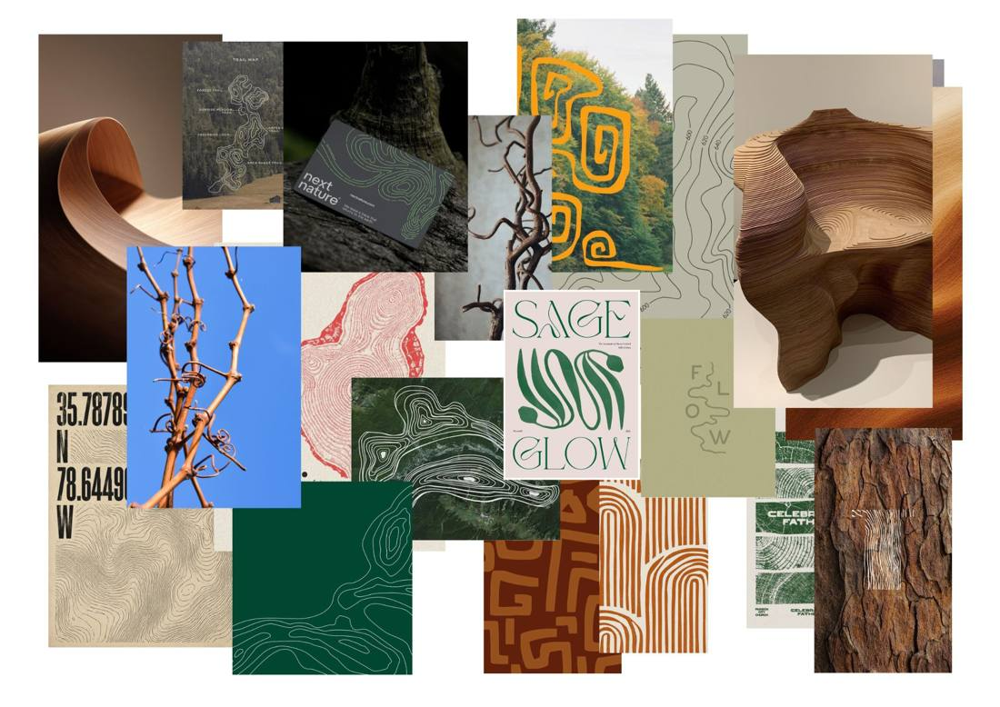
Moodboard 1 · Axe 1
Géométrie vivante
stratescourbes de niveaucernesvrillesécorce
vert forêt#224939brun sarment#643B24écorce#755E49sauge#BEB59Cpapier#E2D4C7accent vrille#E9A23B
Ce qui marche
Très cohérent : lignes, strates et cernes partout, bon dosage entre photo et graphisme.
« SAGE GLOW » ouvre une piste typo : une serif organique, aux formes végétales.
À surveiller
Les courbes de niveau sont un code très répandu (outdoor, marques « nature ») : il faut le rendre propre au sarment.
L’image la plus spécifique est la vrille sur ciel bleu : c’est la seule qui ne peut venir que de la vigne. En faire la signature ?
Ajouter une vue en coupe d’un vrai sarment (moelle, cernes), photographiée par vous.
▶ Ce qu’on retient (proposé)
La vrille et les strates du sarment, plutôt que les courbes de niveau génériques.
Belles textures (kraft, papier, bois matelassé) et empreintes de cernes façon tampon.
Références typo fortes : « Angle Violin », « Die Jelk » (serif très contrastée, à ligatures). Un contraste intéressant entre artisanat et haut de gamme.
À surveiller
Mains, atelier, kraft : ces codes sont partagés par toutes les marques artisanales, la différenciation est faible.
L’étagère en MDF (en bas à droite) est industrielle : elle contredit « la main ». À remplacer.
Idée à tester : encrer de vraies sections de sarment comme des tampons pour créer vos propres textures.
▶ Ce qu’on retient (proposé)
Garder l’empreinte (le tampon) plutôt que l’image de l’atelier.
La piste la plus liée au produit : une lampe révèle le sarment par son ombre.
Les ombres typographiques (« HONOR », « Even in the shadow we can see », « 光影造化 ») suggèrent une idée forte : un logo qui n’apparaît que dans l’ombre de la lampe ou d’une découpe du packaging.
À surveiller
La plupart des motifs sont géométriques (moucharabieh, polyèdres) alors que le sarment est organique. Ajouter des ombres de branches.
Faites le test vous-mêmes : un sarment, une lampe torche, un mur blanc. Vos photos d’ombres vaudront mieux que ces références.
▶ Ce qu’on retient (proposé)
La lumière révèle le sarment : la piste la plus proche de votre produit.
09
Axes créatifs
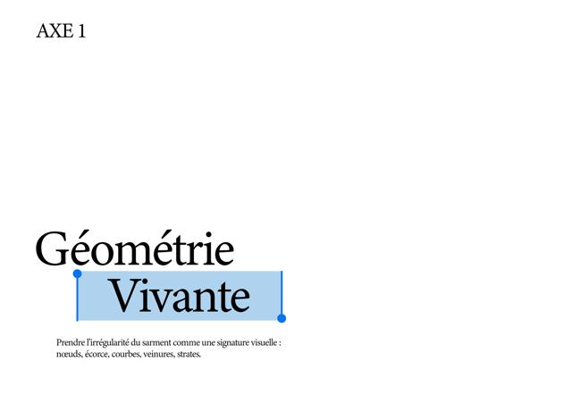
Axe 1 · Géométrie vivante
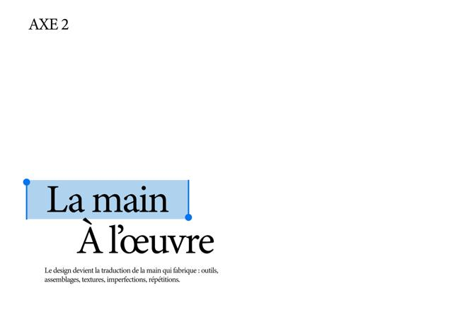
Axe 2 · La main à l’œuvre
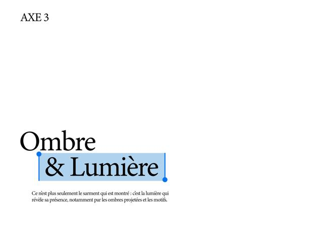
Axe 3 · Ombre & Lumière
Diagnostic des 3 pages
Ce sont des couvertures : un titre et une phrase. Il manque tout ce qui prouve la piste : recherches, application, bilan. Votre tableau prévoit 3 + 3 + 2 + 1 pages.
Plus de la moitié de chaque page est vide : ajoutez l’image clé du moodboard correspondant sur la moitié droite, comme pour l’intercalaire.
La sélection bleue est sur la 2e ligne pour les axes 1 et 3 (« Vivante », « & Lumière »), mais sur la 1re pour l’axe 2 (« La main »). Choisissez une règle, par exemple toujours le mot le plus important.
Dans le PSD, le calque « À l’œuvre » commence par une espace : l’alignement du titre est faussé.
Les trois phrases d’intention sont bonnes : gardez-les telles quelles.
Chaque axe sur 3 pages
Page 1 · Intention : la couverture actuelle + l’image clé du moodboard + 3 mots-clés.
Page 3 · Application et bilan : une mise en situation (étiquette, post Instagram) + « Ce qui marche / Ce qui manque ». Le « À retenir » dit pourquoi on passe à l’axe suivant.
▶ RECHERCHES GRAPHIQUES40
AXE 1
Géométrie vivante
Intention + mots-clés
Image clé du moodboard
1 · Intention
▶ RECHERCHES GRAPHIQUES41
Recherches
Croquis logo
Essais typo
Motifs
Palette
Notes
2 · Recherches
▶ RECHERCHES GRAPHIQUES42
Mise en situation
Ce qui marche
Ce qui manque
→ pourquoi l’axe suivant
3 · Application et bilan
Un récit possible avec vos 3 axes
9 · MidpointAxe 1 · Géométrie vivanteBase solide : parle directement de la matière (nœuds, strates). Incomplète : ne dit rien de la lumière, donc du produit, et les courbes de niveau sont un code très utilisé.
10 · Bad GuysAxe 2 · La main à l’œuvreAuthentique, mais les codes de l’artisanat (mains, atelier, kraft) sont ceux de toutes les marques artisanales : faiblesse de différenciation.
11 · Axe 2.5Axe 3 · Ombre & LumièreLe plus proche du produit : une lampe révèle le sarment par son ombre. Encore insatisfaisant : des références trop géométriques pour une matière organique.
12 · Axe finalSynthèseLa ligne vivante du sarment (axe 1) révélée par la lumière (axe 3), avec la trace de la main (axe 2) dans les textures et l’étiquette.
Ce n’est qu’une proposition : c’est à vous de décider quel axe l’emporte. L’important est que chaque bilan justifie l’axe suivant.
10
Textes corrigés, prêts à coller
Corrections minimales : ponctuation, typographie, cohérence. Les passages modifiés sont soulignés en bleu. Le bouton copie le texte brut.
p. 3 · Analyse contextuelle, § 1
Apostrophes courbes, « coproduits ».
La viticulture française produit plus de 2 tonnes de sarments par hectare et par an, générés lors de la taille et de l’épamprage. Cette biomasse est aujourd’hui majoritairement brûlée, broyée ou compostée et rarement valorisée comme matière noble. À l’échelle nationale, la filière génère plus de 1,6 million de tonnes de coproduits agricoles par an, dont 93 % de sarments.
p. 3 § 2 → Pourquoi maintenant ?
Virgule avant « qui », « à la suite de ».
En Gironde, premier vignoble de Nouvelle-Aquitaine, le brûlage à l’air libre des déchets verts viticoles est interdit ou fortement encadré dans les zones à dominante forestière. Le cadre réglementaire de référence est la circulaire du 18 novembre 2011, qui interdit le brûlage à l’air libre des déchets verts à l’échelle nationale. La pression s’est accentuée à la suite d’épisodes de brûlage de 4 300 à 5 500 tonnes de bois de vigne en trois mois, une pratique dénoncée par une association environnementale comme équivalente à la pollution de 130 000 voitures ou 24 000 camions par jour.
p. 5 · Analyse du secteur, § 1
Un seul « mais », ponctuation.
Le secteur du sarment de vigne se caractérise avant tout par un déséquilibre entre l’abondance de la ressource et la faiblesse de sa valorisation : une ressource massive et récurrente, mais sous-exploitée. L’écrasante majorité de cette biomasse reste traitée comme un déchet agricole plutôt que comme une matière première : broyage-épandage direct dans les rangs de vigne, un peu de compostage et, historiquement, beaucoup de brûlage. Un secteur sous pression réglementaire, pas sous tension économique.
p. 6 · Secteur, § 1
Guillemets français, deux-points.
Les voies de valorisation « nobles » (énergie, matériaux composites, mobilier, cosmétique) existent et sont documentées depuis les années 2010-2015 par les instituts techniques de la filière, mais restent à l’état de niches. Le gisement mobilisable pour ces usages est qualifié de faible par les organismes du secteur eux-mêmes, non pas parce que la matière manque, mais parce que les filières de collecte, de transport et de transformation ne sont pas structurées à grande échelle : chaque tentative de valorisation reste largement artisanale ou expérimentale.
p. 9 · Marché de vente
Phrase de taille réécrite, « Md$ », dernier paragraphe → À retenir.
Taille : les lampes et luminaires pesaient 4,165 Md€ en France en 2022, contre 4,094 Md€ en 2023, soit environ −1,7 % (derniers chiffres du Syndicat du luminaire). La part B2C est plus petite : la consommation des ménages en appareils d’éclairage était de 790 M€ en 2021.
Tendance : les acteurs misent sur les matériaux durables pour se repositionner.
Haut de gamme (monde) : 20,26 Md$ en 2024, avec une croissance attendue de plus de 7,7 % par an jusqu’en 2034.
À retenir : le marché du luminaire haut de gamme croît (+7,7 %/an dans le monde) pendant que le marché grand public stagne, voire recule (−1,7 % en France).
Notes · Positionnement
« artisan », « Atelier Sarment », « luminaires », ordre des cibles (B2C d’abord, B2B en perspective comme dans vos objectifs), ponctuation, « bois du vignoble ».
Pour les amateurs de design local en Nouvelle-Aquitaine et, à terme, les domaines viticoles, Atelier Sarment est l’artisan qui transforme le sarment de vigne brut, tracé jusqu’au domaine d’origine, en luminaires utilitaires et décoratifs. Contrairement aux acteurs existants, qui travaillent soit d’autres bois du vignoble (Niko & Co), soit un matériau composite industriel coupé du geste artisanal (Les Princes Sarments, Vitis Valorem), Atelier Sarment conserve le sarment dans sa forme naturelle. Conçue pour les 25-45 ans urbains ou périurbains, déjà acheteurs de pièces artisanales ou de créateurs, ainsi que pour les domaines viticoles et les acteurs de l’œnotourisme (B2B), la marque fait du sarment une matière première accessible et moderne.
Notes · Pourquoi sommes-nous différents ?
« le sarment », « là où », « nous mettons », « en valeur ».
On ne dénature pas le sarment. Là où les autres entreprises le broient pour l’utiliser en brisures, nous le conservons dans sa structure naturelle, en y ajoutant des courbes organiques pour le sublimer. Nous mettons en valeur ce qui est habituellement broyé ou brûlé.
Notes · Recycler le sarment, c’est
« vignerons », CO₂, formulation parallèle.
Du temps gagné pour les vignerons
Un engagement fort pour l’environnement
Moins de CO₂
Pas de fumée toxique
Moins de risques d’incendie
Notes · Marché du sarment
La Chine n’est pas en Europe occidentale ; « utilisé », « initiale ».
Le marché du sarment se concentre dans les grands pays viticoles : Espagne, France et Italie en Europe, mais aussi la Chine.
Le sarment n’est actuellement pas utilisé dans sa forme initiale.
PESTELÉ complet, en puces étiquetées
Votre texte, découpé en une idée par ligne, avec un mot-clé et une étiquette. Seul ajout : « Retour au sol ».
Politique
AtoutFinancements publics Politiques publiques d’économie circulaire et de transition écologique (ADEME, appels à projets type Agr’air) qui orientent les financements vers la valorisation des déchets agricoles plutôt que vers leur élimination.
FreinPas de politique dédiée Aucune politique agricole nationale n’est dédiée au sarment : il est traité comme un sous-produit générique de la filière vitivinicole, pas comme une ressource stratégique.
AtoutPoids local de la filière Poids politique local fort de la filière viticole (en Gironde notamment, premier poste excédentaire de la balance commerciale départementale), ce qui rend les collectivités attentives aux enjeux du secteur.
Économique
FreinBois peu cher Coût du bois globalement bas, ce qui réduit l’incitation économique des domaines à valoriser plutôt qu’à éliminer leurs sarments.
MixteFilière non structurée Filière de collecte non structurée à grande échelle : pas de marché organisé avec prix de référence, des accords de gré à gré souvent gratuits plutôt qu’une économie d’achat-revente.
AtoutCrise viticole Crise viticole en toile de fond (arrachages, vignes abandonnées) qui fragilise financièrement une partie des domaines : un argument supplémentaire pour eux d’accepter une valorisation à coût nul.
Socioculturel
AtoutEnvie de local et d’histoire Attentes croissantes des consommateurs pour le local, l’upcycling et les objets porteurs d’une histoire (traçabilité du terroir, storytelling du domaine d’origine).
AtoutRejet du brûlage Sensibilité citoyenne grandissante à la pollution de l’air liée au brûlage agricole, qui crée une pression sociale sur les pratiques traditionnelles.
AtoutImage patrimoniale Image patrimoniale forte de la vigne en France, qui donne une valeur symbolique au matériau au-delà de sa fonction.
Technologique
MixteDeux niveaux de transformation L’artisanal simple (vannerie, ligature, séchage), accessible sans investissement lourd, et l’industriel avancé (matériaux composites brevetés type Sarmine® ou Terrazzo Vigne), qui demande R&D et machines spécifiques.
FreinPas d’outils intermédiaires Peu d’innovation technologique intermédiaire : le secteur manque d’outils standardisés pour transformer le sarment à échelle moyenne.
AtoutTraçabilité numérique Émergence de technologies de traçabilité numérique (QR code, scan) comme argument de différenciation chez certains acteurs premium.
Écologique
AtoutRessource renouvelable Le sarment est une biomasse renouvelée chaque année, ressource durable tant que le vignoble existe.
AtoutBrûlage polluant Le brûlage à l’air libre génère des particules fines (PM2,5) et des composés potentiellement cancérigènes : c’est le principal moteur environnemental qui pousse le secteur à se réinventer.
AtoutBilan carbone Bilan carbone valorisable dans la communication (émissions évitées par rapport au brûlage), argument déjà exploité commercialement par des acteurs comme Vitis Valorem.
VigilanceRetour au sol (ajout proposé) Le broyage-épandage nourrit le sol : certains experts jugent ces 2 t/ha un minimum pour sa vie biologique. Le projet ne prélève qu’une faible part des sarments.
Légal
FreinCadre fragmenté Réglementation du brûlage variable selon les départements et les zones (arrêtés préfectoraux, RIPFCI en Gironde et dans les Landes) : un cadre légal fragmenté plutôt qu’uniforme.
AtoutFlou juridique souple L’obligation d’éliminer certains sous-produits vinicoles (marcs, lies) est encadrée depuis 2014 ; le sarment reste dans un flou juridique plus souple.
MixteAucune norme Aucune norme ni certification spécifique n’encadre à ce jour la transformation du sarment en mobilier ou en objet design : un vide juridique à la fois facilitateur et risqué.
Éthique
VigilanceRisque de greenwashing Le discours écologique (upcycling, local, économie circulaire) peut masquer un positionnement avant tout esthétique et commercial : l’honnêteté sur ce que l’objet résout réellement doit être assumée.
VigilanceÉquité avec les vignerons La matière est aujourd’hui récupérée gratuitement ; si le produit fini se vend cher, il y a une asymétrie de valeur à interroger (visibilité, traçabilité, voire partage de valeur).
VigilanceTransparence sur l’origine Ne pas promettre une traçabilité précise (domaine, cépage) si elle ne peut pas être réellement garantie à l’échelle du projet.
SWOT réordonné
Interne en haut, externe en bas. Les ajouts proposés sont soulignés en bleu.
Forces
Matière gratuite ou peu coûteuse.
Ancrage territorial fort.
Technique accessible en autodidacte (vannerie).
Storytelling puissant autour du patrimoine viticole.
Sarment conservé entier : une matière reconnaissable, que personne d’autre ne propose.
Faiblesses
Difficile à standardiser et à industrialiser.
Traitement du bois exigeant.
Savoir-faire technique à acquérir ou à externaliser.
Production lente (3 à 6 mois de séchage).
Marque inconnue au lancement.
Opportunités
Peu de concurrence directe sur le luminaire en sarment brut en Nouvelle-Aquitaine.
Dynamique réglementaire et institutionnelle favorable à l’économie circulaire viticole.
Marché de l’upcycling en croissance.
Luminaire haut de gamme en croissance (+7,7 %/an).
Menaces
Acteurs mieux financés sur le segment composite (Les Princes Sarments) qui pourraient élargir leur gamme vers le mobilier.
Dépendance à la bonne volonté des domaines pour l’approvisionnement.
luminaire, tant que l’objectif est le pied de lampe
PESTEL · PESTELE · PESTELÉ
PESTELÉ
co-produits · Coproduits
coproduits
Marché de vente · Marché de ventes
Marché de vente
Atelier sarment · Atelier Sarment
Atelier Sarment
récolte nov.–fév. · collecte nov.–mars
de novembre à mars
séchage 3–6 mois · 6 mois minimum
un seul chiffre
≈ 1,5 Mt de sarments · 1,6 Mt de coproduits
1,6 Mt de coproduits, dont 93 % de sarments (≈ 1,5 Mt) ; attention, 2 t × 793 900 ha donne ≈ 1,6 Mt, pas 1,5
cible 30-55 ans · 25-45 ans
25-45 ans pour le cœur de cible
11
Prochaines étapes
Dans cet ordre. Les cases se souviennent de votre avancement dans ce navigateur.
Retour établi à partir de ANALYSE.pdf (11 p.), du fichier AXES (3 plans de travail), des 3 moodboards, du tableau Save the Cat et de vos notes du projet « Lampes sarments de vignes ».